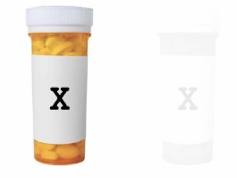

<!DOCTYPE html>
<html>
<head>
  <title>USYD Metacognition</title>
  <link rel="icon" type="image/x-icon" href="favicon.ico">

  <!-- Load jsPsych and jquery-->
  <script src="https://unpkg.com/jspsych@7.3.3"></script>
  <script src='https://cdnjs.cloudflare.com/ajax/libs/jquery/2.1.3/jquery.min.js'></script>
  <script src='https://cdnjs.cloudflare.com/ajax/libs/foundation/5.5.2/js/foundation.min.js'></script>
  <link href="https://unpkg.com/jspsych@7.2.3/css/jspsych.css" rel="stylesheet" type="text/css" />
  <link href="https://unpkg.com/jquery-ui-css@1.11.5/jquery-ui.css" rel="stylesheet" type="text/css" />


  <!-- Load jsPsych plugins-->
  <script src="https://unpkg.com/@jspsych/plugin-instructions@1.1.3"></script>
  <script src="https://unpkg.com/@jspsych/plugin-html-keyboard-response@1.0.0"></script>
  <script src="https://unpkg.com/@jspsych/plugin-html-button-response@1.0.0"></script>
  <script src="https://unpkg.com/@jspsych/plugin-survey-text@1.0.0"></script>
  <script src="https://unpkg.com/@jspsych/plugin-external-html@1.0.0"></script>
  <script src="https://unpkg.com/@jspsych/plugin-external-html@1.0.0"></script>
  <script src="https://unpkg.com/@jspsych/plugin-preload@1.0.0"></script>
  <script src="https://unpkg.com/@jspsych/plugin-html-slider-response@1.1.2"></script>
  <script src="https://unpkg.com/@jspsych/plugin-html-button-response@1.1.2"></script>
  <script src="https://unpkg.com/@jspsych/plugin-browser-check@1.0.0"></script>
  <script src="https://unpkg.com/@jspsych/plugin-canvas-keyboard-response@1.1.2"></script>
  <script src="https://unpkg.com/@jspsych/plugin-call-function"></script>
  <script src="https://unpkg.com/@jspsych/plugin-fullscreen@1.2.0"></script>
  <script src="https://unpkg.com/@jspsych/plugin-survey-html-form@1.0.0"></script>
  <script src="https://unpkg.com/@jspsych/plugin-survey-likert@1.1.2"></script>
  <script src="https://unpkg.com/@jspsych-contrib/plugin-pipe"></script>

  <!-- Load the global environment-->
  <script src="global-env.js"></script>
  <script src="info_sheets.js"></script>
  

 

  <!-- Some custom CSS-->
  <link href="custom-css.css" rel="stylesheet" type="text/css" />

</head>
<body></body>
<script>


//////////////////////////////////
//         Gloabl Settings      //
//////////////////////////////////

// Initalise jsPsych
  const jsPsych = initJsPsych({
   on_interaction_data_update: function(data) {
     if(data.event == 'fullscreenexit'){in_fullscreen = false}

   },
 on_finish: function(data) {
   if(aborted == true){alert("You must use Chrome or Firefox to complete this experiment.")}
     if(aborted == false) {  if(jsPsych.data.get().filter({trial_type: "Summary Trial"}).select('correct').mean() < 0.55){window.location = attention_redirect_link} else {window.location = redirect_link}}
    //jsPsych.data.get().localSave('csv','mydata.csv');
   }
})


// Settings (set these)

  const DataPipe_ID = "JTPiCWKloWdm" // The DataPipe ID for where the data should be stored

  const sona_experiment_id = "NA"; // The SONA experiment ID 
  const sona_credit_token = "NA"; // The SONA credit token 
  const Prolific_redirect = "CHGWKNI0"; // The Prolific redirect link (to credit)
  const Prolific_failed_check = "C13PIUOF"; // The Prolific redirect link to NOT credit (manual review)
  const task_time = 15;
  var no_trials = 30; // number of trials in each block
  var in_fullscreen = true;
  var trialnum = 1;
  var blocknum = 1;
  aborted = false;

  var ratings_on = null;
  var outcome_density = null;
  var outcome = null;


//////////////////////////////////


  // Browser Check


  var browser_check = {
    type: jsPsychBrowserCheck,
    inclusion_function: (data) => {
      return ['chrome', 'firefox'].includes(data.browser) && data.mobile === false;
    },
    exclusion_message: (data) => {
      aborted = true;
      return `<p>You must use Chrome or Firefox to complete this experiment.</p>`
    },
  };


// Enter Fullscreen

  var enter_fullscreen = {
    type: jsPsychFullscreen,
    message: '<p>To take part in the experiment, your browser must be in fullscreen mode. Exiting fullscreen mode will pause the experiment. <br></br>Please click the button below to enable fullscreen mode and continue.</p>',
    fullscreen_mode: true,
    on_finish: function(){
      in_fullscreen = true;
    }
  }


// Instructions

  var new_block = {
    type: jsPsychInstructions,
    on_finish: function(){
      blocknum++;
    },
    pages: function(){
      return [
        '<p class="instructions">You can now pause for a break. You have completed ' + blocknum + ' out of '+total_blocks+' blocks.<br><br>As a reminder:<br>If the box on the <strong>left</strong> had more dots, press <strong>W</strong>.<br>If the box on the <strong>right</strong> had more dots, press <strong>E</strong>.</p>' 

        ]
    },
    show_clickable_nav: true
  }


  var instructions = {
    type: jsPsychInstructions,
    pages: function(){
      if(ratings_on == false) return [
        '<h1>Welcome to the task!</h1>' +
        '<p>In this experiment, you are asked to imagine that you are a medical researcher studying a new illness caused by a virus in the human body.</p>' + 
        '<p>An experimental drug, Cloveritol, has been developed in the hopes of treating the disease effectively. Laboratory results of Cloveritol have been promising but the drug&#39;s efficacy and side effects have not yet been tested on patients.</p>',
        '<p>Your job is to assess the new drug while you treat patients with the disease.</p>' + 
        '<p>You will see a series of patients one by one. For each one, you are first shown whether the patient was administered Cloveritol or no treatment.</p>' +
        '<p>You will be asked to predict the patient&#39;s chances of recovery.<p>' +
        '<p>You will then observe whether the patient recovered by the end of the observation period, or whether they were still sick.</p>',
        '<p>You will have the opportunity to treat a series of patients. At the end of these trials, you will be asked to judge how effective Cloveritol is for treating this particular illness.</p>' +
        '<p>Try to use only the knowledge you have learned from the experiment to make your decisions.</p>'

        ]
       if(ratings_on == true) return [
       '<h1>Welcome to the task!</h1>' +
        '<p>In this experiment, you are asked to imagine that you are a medical researcher studying a new illness caused by a virus in the human body.</p>' + 
        '<p>An experimental drug, Cloveritol, has been developed in the hopes of treating the disease effectively. Laboratory results of Cloveritol have been promising but the drug&#39;s efficacy and side effects have not yet been tested on patients.</p>',
        '<p>Your job is to assess the new drug while you treat patients with the disease.</p>' + 
        '<p>You will see a series of patients one by one. For each one, you are first shown whether the patient was administered Cloveritol or no treatment.</p>' +
        '<p>You will be asked to predict the patient&#39;s chances of recovery.<p>' +
        '<p>You will then be asked to rate your confidence in your prediction on a scale ranging from "guessing" to "certain".<p>' +  
        '<p>You will then observe whether the patient recovered by the end of the observation period, or whether they were still sick.</p>',
        '<p>You will have the opportunity to treat a series of patients. At the end of these trials, you will be asked to judge how effective Cloveritol is for treating this particular illness.</p>' +
        '<p>Try to use only the knowledge you have learned from the experiment to make your decisions.</p>'

        ]
     },
     show_clickable_nav: true
   }


   var practice_end = {
    type: jsPsychInstructions,

    pages:  function(){
     if(ratings_on == true) return  [
      '<p class="instructions">In the task proper, you will not be provided accuracy feedback on your judgements, but the box you selected will be outlined in <font color="blue"><strong>blue</strong></font>.</p>' +
      '<p class="instructions">You will be asked to rate your confidence in your judgement on a rating scale after each trial, which will be explained next.</p>' 

      ]

      if(ratings_on == false) return  [
        '<p class="instructions">In the task proper, you will not be provided accuracy feedback on your judgements, but the box you selected will be outlined in <font color="blue"><strong>blue</strong></font>.</p>' 

        ]
    },
  show_clickable_nav: true
}


var test_start = {
  type: jsPsychInstructions,

  pages:  function(){
   if(ratings_on == true) return  [
    '<p class="instructions">The task proper is divided into '+total_blocks+' blocks of '+no_trials+' trials, where you can pause for a break before every block.</p>' +
    '<p class="instructions">There are no time limits on your responses to the dots or on your confidence ratings.</p>' +
      //'<p class="instructions">You can receive up to 2 pounds bonus if your performance is satisfactory.</p>' +
    '<p class="instructions">As a reminder: <br>If the box on the <strong>left</strong> had more dots, press <strong>W</strong>.<br> If the box on the <strong>right</strong> had more dots, press <strong>E</strong>.</p>' 

    ]

    if(ratings_on == false) return  [
      '<p class="instructions">The task proper is divided into '+total_blocks+' blocks of '+no_trials+' trials, where you can pause for a break before every block.</p>' +
      '<p class="instructions">There are no time limits on your responses to the dots.</p>' +
      //'<p class="instructions">You can receive up to 2 pounds bonus if your performance is satisfactory.</p>' +
      '<p class="instructions">As a reminder: <br>If the box on the <strong>left</strong> had more dots, press <strong>W</strong>.<br> If the box on the <strong>right</strong> had more dots, press <strong>E</strong>.</p>' 

      ]
  },
show_clickable_nav: true
}


var conf_instruc = {
  timeline: [
  {
    type: jsPsychHtmlSliderResponse,
    css_classes: ["conf_instructions"],
    stimulus: function(){

      var header = jsPsych.timelineVariable('header')
      return '<div id = "header" style = "position: relative;">' +header + "</div><br><br>" +
      '<div id = "Iconf1" class = "conf_ins" style = "height: 25px; width: 154px; margin-top: 2px; margin-left: 15px;"></div>' +
      '<div id = "Iconf2" class = "conf_ins" style = "height: 25px; width: 154px; margin-top: 2px; margin-left: 169px;"></div>' +
      '<div id = "Iconf3" class = "conf_ins" style = "height: 25px; width: 154px; margin-top: 2px;margin-left: 323px;"></div>' +
      '<div id = "Iconf4" class = "conf_ins" style = "height: 25px; width: 154px; margin-top: 2px;margin-left: 477px;"></div>' +
      '<div id = "Iconf5" class = "conf_ins" style = "height: 25px; width: 154px; margin-top: 2px;margin-left: 631px;"></div>'
    },
    on_load: function(){

      var w = window.innerWidth;
      var marLeft = (w-800)/2;
      document.getElementById("Iconf1").style.left = marLeft + "px";
      document.getElementById("Iconf2").style.left = marLeft  + "px";
      document.getElementById("Iconf3").style.left = marLeft  + "px";
      document.getElementById("Iconf4").style.left = marLeft  + "px";
      document.getElementById("Iconf5").style.left = marLeft  + "px";

      var elementx = document.getElementById("jspsych-html-slider-response-response");
      elementx.disabled = jsPsych.timelineVariable('disable');


    },
    min: 1,
    max: 6,
    step: 1,
    slider_start: jsPsych.timelineVariable('start'),
    slider_width: 800,
    labels: ['Guessing', "", "", "", "", "Certain"],
    button_label: "Submit",
    require_movement: jsPsych.timelineVariable('require')
  }

  ],
  timeline_variables: [
    {start: 3, require: true, disable: false, header: 'A rating scale as shown below is used throughout the task. You will be able to rate your confidence of your judgements by choosing any point along the rating scale with your mouse. <br></br>Choose any point on the rating scale and click &apos;Submit&apos; to continue.'},
    {start: 6, require: false, disable: true, header: 'During the task, if you are <strong>very sure</strong> that you made the correct judgement, you should respond <strong>&apos;Certain&apos;</strong>'},
    {start: 1, require: false, disable: true, header: '<p class="instructions">If you are <strong>very unsure</strong> you made the correct judgement, you should respond <strong>&apos;Guessing&apos;</strong></p>'},
    {start: 4, require: true, disable: false, header: '<p class="instructions">If you are <strong>somewhat sure</strong> about being correct, you should select a rating between the two descriptions.</p>' +
    '<p class="instructions">If you understand how to use and take advantage of the whole rating scale, choose any point on the rating scale and click &apos;Submit&apos; to continue.</p>'}

    ],
  conditional_function: function(){
   if(ratings_on === true){
    return true;
  } else {
    return false;
  }
}


}


/////////////// **********  Contingency TRIAL  ***************************** ///////////////


var train_trial = {
  data: function(){
    return {trialnum: trialnum, blocknum: blocknum}
  },
  timeline: [


// Present Stimulus

  {
    type: jsPsychHtmlButtonResponse,
    stimulus: function(){

      if(jsPsych.timelineVariable('cue') == "Cloveritol"){
        return `</img><h1 style = "color: #275AC5;">`+jsPsych.timelineVariable('cue')+`</h1><p>Will the patient recover?</p><output style = "font-size: 20pt; color: #279AC5;"></output>`} else {
          return `<h1 style = "color: #275AC5;">`+jsPsych.timelineVariable('cue')+`</h1><p>Will the patient recover?</p><output style = "font-size: 20pt; color: #279AC5;"></output>`

        }
      },


      require_movement: true,
      choices: ['Very unlikely', 'Very likely'],
      css_classes: 'train_css',
      slider_start: 0,
      on_load: function(){

// Live value above
        // let i = document.querySelector('input'),
        // o = document.querySelector('output');
        // o.innerHTML = i.value + "%";


        //   i.addEventListener('input', function () {
        //     o.innerHTML = i.value + "%";
        //   }, false);


      },
      on_finish: function(data){
        data.trial_type = "Stimulus Response";

      },

    },


// Confidence Rating
    {
      timeline: [

      {
        type: jsPsychHtmlSliderResponse,
        stimulus: "<h3>Rate your confidence:</h3>" +
        '<div id = "conf1" class = "conf" style = "height: 25px; width: 154px; margin-top: 2px; margin-left: 15px;"></div>' +
        '<div id = "conf2" class = "conf" style = "height: 25px; width: 154px; margin-top: 2px;margin-left: 169px;"></div>' +
        '<div id = "conf3" class = "conf" style = "height: 25px; width: 154px; margin-top: 2px;margin-left: 323px;"></div>' +
        '<div id = "conf4" class = "conf" style = "height: 25px; width: 154px; margin-top: 2px;margin-left: 477px;"></div>' +
        '<div id = "conf5" class = "conf" style = "height: 25px; width: 154px; margin-top: 2px;margin-left: 631px;"></div>',
        min: 1,
        max: 6,
        step: 1,
        slider_width: 800,
        require_movement: true,
        labels: ['Guessing', "", "", "", "", "Certain"],
        button_label: "Submit",
        on_finish: function(data){
          data.trial_type = "Confidence Rating";

        },
        css_classes: ["conf_rating"]

      }

      ],
      conditional_function: function(){
        if(ratings_on === false){
          return false;
        } else {
          return true;
        }
      }
    },


// Provide Feedback 
    {
      timeline: [


      {
        type: jsPsychHtmlButtonResponse,
        stimulus: function(){
          if(jsPsych.timelineVariable('cue') == "Cloveritol"){ return `</img><h1 style = "color: #275AC5;">`+jsPsych.timelineVariable('cue')+`</h1><br><br><br><p>Outcome:</p>` +
          '<h2 style = "color: ' + jsPsych.timelineVariable('col') + ';">' + jsPsych.timelineVariable('outcome') + '</h2><output style = "font-size: 20pt; color: #6BB76E;">'} else{

            return `<h1 style = "color: #275AC5;">`+jsPsych.timelineVariable('cue')+`</h1><br><br><br><p>Outcome:</p>` +
            '<h2 style = "color: ' + jsPsych.timelineVariable('col') + ';">' + jsPsych.timelineVariable('outcome') + '</h2><output style = "font-size: 20pt; color: #6BB76E;">'

          }

        },
        require_movement: false,
        choices: ['Next'],
        on_load: function(){

// Live value above
        // let i = document.querySelector('input'),
        // o = document.querySelector('output');
        // o.innerHTML = i.value + "%";
//Dsiable Slider
      // i.disabled = true;


        }


      },


      ],
      conditional_function: function(){
        if(provide_feedback === true){
          return true;
        } else {
          return false;
        }
      }
    },


// Summary trial to store all the data typically required (nothing is displayed to the particpant) 
    {
      type: jsPsychCallFunction,
      func: function(data){

      },
      on_finish: function(data){

        data.rt = jsPsych.data.get().filter({trial_type: "Stimulus Response"}).last().values()[0].rt;
        data.response = jsPsych.data.get().filter({trial_type: "Stimulus Response"}).last().values()[0].response;
        if(ratings_on == true){
          data.confidence = jsPsych.data.get().filter({trial_type: "Confidence Rating"}).last().values()[0].response;
        } else {
          data.confidence = "";
        }
        data.cue = jsPsych.timelineVariable('cue');
        data.outcome = jsPsych.timelineVariable('outcome');
        data.trial_type = "Summary Trial"
        trialnum++;

      }
    },


    ],
timeline_variables: [
  // Low Outcome
    {cue: 'Cloveritol', outcome: 'Patient has recovered', col: 'green'},
    {cue: 'No Treatment', outcome: 'Patient has recovered', col: 'green'},
    {cue: 'Cloveritol', outcome: 'Patient did not recover', col: 'red'},
    {cue: 'No Treatment', outcome: 'Patient did not recover', col: 'red'},
    {cue: 'Cloveritol', outcome: 'Patient did not recover', col: 'red'},
    {cue: 'No Treatment', outcome: 'Patient did not recover', col: 'red'},
    {cue: 'Cloveritol', outcome: 'Patient did not recover', col: 'red'},
    {cue: 'No Treatment', outcome: 'Patient did not recover', col: 'red'},
    {cue: 'Cloveritol', outcome: 'Patient did not recover', col: 'red'},
    {cue: 'No Treatment', outcome: 'Patient did not recover', col: 'red'},
  // High Outcome
    {cue: 'Cloveritol', outcome: 'Patient has recovered', col: 'green'},
    {cue: 'No Treatment', outcome: 'Patient has recovered', col: 'green'},
    {cue: 'Cloveritol', outcome: 'Patient has recovered', col: 'green'},
    {cue: 'No Treatment', outcome: 'Patient has recovered', col: 'green'},
    {cue: 'Cloveritol', outcome: 'Patient has recovered', col: 'green'},
    {cue: 'No Treatment', outcome: 'Patient has recovered', col: 'green'},
    {cue: 'Cloveritol', outcome: 'Patient has recovered', col: 'green'},
    {cue: 'No Treatment', outcome: 'Patient has recovered', col: 'green'},
    {cue: 'Cloveritol', outcome: 'Patient did not recover', col: 'red'},
    {cue: 'No Treatment', outcome: 'Patient did not recover', col: 'red'},


    ],
sample: {
        type: 'custom',
        fn: function(t){
          console.log(outcome)
           if(outcome == "Low") var myArray = [0,1,2,3,4,5,6,7,8,9]; 
           if(outcome == "High") var myArray = [10,11,12,13,14,15,16,17,18,19];

           
           var shuffledArray = jsPsych.randomization.repeat(myArray, 1);
           return shuffledArray;
        }
    }
};


var efficacy_rating = {
  type: jsPsychHtmlSliderResponse,
    on_finish: function(data){
          data.trial_type = "Efficacy Rating";

        },
  stimulus: "</img><h1 style = 'color: #275AC5;'>Cloveritol vs No treatment</h1><p>On a scale from -100% to 100%, rate how effective you think the treatment was compared to having no treatment at all</p><p style = 'color: grey;'>NOTE: intermediate negative values indicate the drug actually made the disease worse, whereas intermediate positive values indicate the drug was effective in treating the disease</p>",
  labels: ['-100 (effectively worsens recovery)', '0 (completely ineffective)','+100 (effectively improves recovery)']
}


var debug = {
  type: jsPsychSurveyText,
  questions: [
    {prompt: 'Did you experience any issues while completing this study?', rows: 5}
    ]
}


  // Blocks

const train_block = {
  data: {phase: "Train"},
  timeline: [train_trial],
  repetitions: no_trials/10,
  on_timeline_start: function(){
    provide_feedback = true; 
  }
}


// Save data and redirect [shouldn't need to edit below]


// Capture any url paramaters
const PROLIFIC_PID = jsPsych.data.getURLVariable('PROLIFIC_PID');
const SONAID = jsPsych.data.getURLVariable('SONAID');


// Redirect based on SONA vs Prolific

    // SONA
if(typeof SONAID != 'undefined'){

  jsPsych.data.addProperties({participant_id: SONAID});
  jsPsych.data.addProperties({Source: "SONA"});

  redirect_link = "https://sydneypsych.sona-systems.com/webstudy_credit.aspx?experiment_id="+sona_experiment_id+"&credit_token="+sona_credit_token+"&survey_code=" + SONAID + "&id=" + SONAID;
    attention_redirect_link = "https://sydney.au1.qualtrics.com/jfe/form/SV_3h2qh8pBAnv00QK?SONAID=" + SONAID + "accuracy=" + jsPsych.data.get().filter({trial_type: "Summary Trial"}).select('correct').mean(); // A seperate link for those who fail the attention check


  }

    // PROLIFIC
  if(typeof SONAID === 'undefined'){

    jsPsych.data.addProperties({participant_id: PROLIFIC_PID});
    jsPsych.data.addProperties({Source: "Prolific"});

    redirect_link ="https://app.prolific.com/submissions/complete?cc=" + Prolific_redirect;
    attention_redirect_link ="https://app.prolific.co/submissions/complete?cc=" + Prolific_failed_check; // A seperate link for those who fail the attention check
  }


  // Save to OSF
  const subject_id = jsPsych.randomization.randomID(10);
  const filename = `${subject_id}.csv`;


  const save_data = {
    type: jsPsychPipe,
    action: "save",
    experiment_id: DataPipe_ID,
    filename: filename,
    data_string: ()=>jsPsych.data.get().csv()
  };


// Create Experiment
//
  timeline = [  participant_info_paid, participant_info_SONA, instructions, train_block, efficacy_rating,debug, save_data, DEBRIEF_SONA ];

  async function createExperiment(){

    /////////////// **********  Condition Assignment  ***************************** ///////////////
    const condition = await jsPsychPipe.getCondition(DataPipe_ID);
    jsPsych.data.addProperties({condition: condition});
    if(condition == 0) { ratings_on = false; outcome = "Low";}
    if(condition == 1) { ratings_on= true; outcome = "Low";}
    if(condition == 2) { ratings_on = false; outcome = "High";}
    if(condition == 3) { ratings_on= true; outcome = "High";}

    jsPsych.data.addProperties({ratings_on: ratings_on});
    jsPsych.data.addProperties({outcome: outcome});


    jsPsych.run(timeline);
  }


  createExperiment();


</script>
</html>
